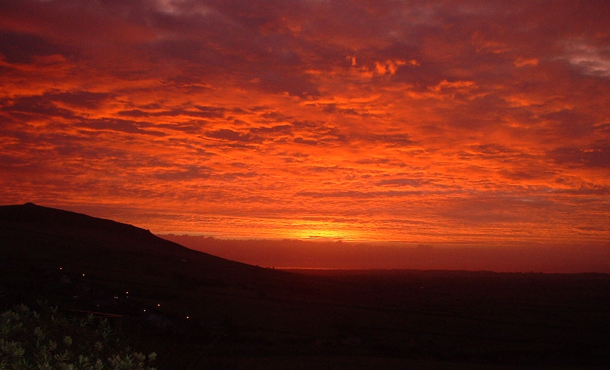

Le cairn funéraire de Mynydd Carnguwch

Le cairn funéraire de l'âge du bronze se dresse au sommet de Mynydd Carnguwch, à l'est de Llithfaen. Au cours du deuxième millénaire avant Jésus-Christ, les gens étaient souvent enterrés dans un coffre en pierre sous un tas de pierres. On trouve de nombreux exemples des cairns sur les sommets de Eryri et Llŷn.
 Burial site on summit of Mynydd Carnguwch
Burial site on summit of Mynydd Carnguwch
Le cairn est construit sur un de roche naturelle. Il est en forme ovale et mesure environ 43 mètres par 31 mètres. Au temps de sa construction le cairn aurait mesuré plus de 6 mètres de haut. Le cairn est dans un état plutôt lamentable aujourd'hui, mais sa forme est encore perceptible.
Un cairn comme celui-ci serait la tombe d'une personne. Qui sait qui était cette personne ? Nous ne le saurons jamais, mais l'édifice est imposant. Il était certainement conçu pour commémorer quelqu'un d'important.
The dawn over Mynydd Carnguwch.
Vers l'est, sur les pentes de Carnguwch, on trouve les restes des huttes circulaires, qui étaient les habitations des gens qui cultivaient les terres ici à l'âge du fer et pendant l'époque romaine. Il y a un groupe de huttes près des fermes de Carnguwch Fawr, Tyddyn Bach et Llech-engan.
Puisque la terre ici est relativement fertile, on trouve également les traces de maisons médiévales, ce qui confirme qu'il y a eu une continuation de la culture au cours des siècles. Il y en a un bon exemple près de l'église – juste au nord de Penfras Uchaf et plusieurs autres exemples au sud de Hafod sur le côté nord de Carnguwch.
 Map showing the direction of Mynydd carnguwch from The Eifl
Map showing the direction of Mynydd carnguwch from The Eifl
Au sud de la colline se trouve l'ancienne église de St Beuno. Un peu plus au sud on voit un menhir et des objets qui datent de l'âge du bronze ont été découverts dans les champs autour. C'est un paysage historique et préhistorique.